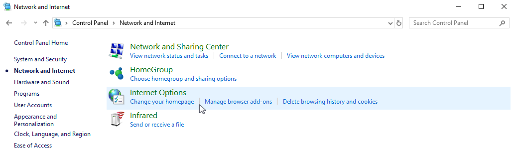
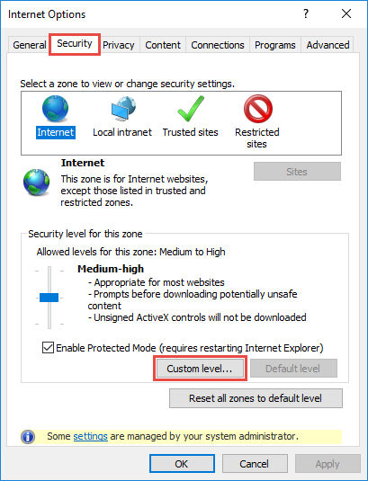
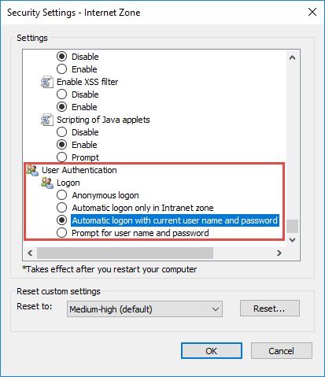

Настроить аутентификацию пользователей через LDAP на .NET Framework
Для включения возможности авторизации пользователей с помощью LDAP внесите изменения в файл Web.config в корневой папке приложения. Настройки для Active Directory и OpenLDAP имеют некоторые различия.
-
Укажите “Ldap” и “SspLdapProvider” в списке доступных провайдеров авторизации. Шаг выполняется одинаково для Active Directory и OpenLDAP:
-
Укажите IP или адрес сервера, а также параметры домена для пользователей в секции “Ldap”. Параметры для Active Directory и OpenLDAP различаются.
- ServerPath — доменное имя (URL-адрес) LDAP сервера, но не IP-адрес.
- KeyDistributionCenter — доменное имя (URL-адрес), но не IP-адрес.
-
Укажите IP или адрес сервера, а также параметры домена для портальных пользователей в секции “SspLdapProvider”. Шаг выполняется одинаково для Active Directory и OpenLDAP:
-
Сохраните изменения в файле Web.config.
-
Шаг только для настройки OpenLDAP: перед синхронизацией с OpenLDAP-сервером укажите в файле Web.config в Terrasoft.WebApp значение для “UseLoginUserLDAPEntryDN”.
Без данной настройки пользователи будут синхронизироваться без значений в поле LDAPEntryDN таблицы SysAdminUnit, что приведет к проблемам с авторизацией.
Настроить аутентификацию пользователей через LDAP на .NET Core
Для включения возможности авторизации пользователей с помощью LDAP внесите изменения в файл Terrasoft.WebHost.dll.config в корневой папке приложения. Настройки для Active Directory и OpenLDAP одинаковы.
-
Укажите “Ldap” в списке доступных провайдеров авторизации. Чтобы портальные пользователи могли войти в систему, добавьте провайдер “SspLdapProvider”:
- Укажите настройки провайдера аутентификации “Ldap”:
- ServerPath — доменное имя (URL-адрес) LDAP сервера, но не IP-адрес.
- KeyDistributionCenter — доменное имя (URL-адрес), но не IP-адрес.
Чтобы использовать защищенный протокол LDAPS, в настройках провайдера аутентификации укажите следующие параметры:
- SecureSocketLayer — флаг для использования LDAPS.
- CertificateFileName — имя сгенерированного SSL-сертификата для валидации LDAPS-подключения. Данный сертификат должен находиться в корне приложения. Этот параметр обязательный для заполнения при SecureSocketLayer=true, например:
- Укажите IP или адрес сервера, а также параметры домена для портальных пользователей в секции “SspLdapProvider”:
- Сохраните изменения в файле Terrasoft.WebHost.dll.config.
Настроить провайдеры аутентификации
Настройка провайдеров аутентификации осуществляется одинаково для приложений на .NET Framework и .NET Core. Настройки вносятся в следующих файлах, которые находятся в корневой директории приложения:
- Web.config для приложения на .NET Framework.
- Terrasoft.WebHost.dll.config для приложения на .NET Core.
Для настройки откройте файл в текстовом редакторе и укажите провайдеров аутентификации:
-
InternalUserPassword — провайдер, указанный по умолчанию. Если вы хотите предоставить возможность аутентификации по NTLM-протоколу только пользователям, которые не синхронизированы с LDAP, то не указывайте для параметра providerNames дополнительные значения.
-
Ldap — добавьте к значениям параметра providerNames данный провайдер, чтобы предоставить возможность аутентификации по NTLM-протоколу пользователям приложения, которые синхронизированы с LDAP.
-
SSPLdapProvider — добавьте к значениям параметра providerNames данный провайдер, чтобы предоставить возможность аутентификации по NTLM-протоколу пользователям портала самообслуживания, которые синхронизированы с LDAP.
-
NtlmUser — добавьте к значениям параметра autoLoginProviderNames данный провайдер, чтобы предоставить возможность аутентификации по NTLM-протоколу пользователям приложения, независимо от того, синхронизированы ли они с LDAP и какой тип аутентификации установлен для данных пользователей в Creatio.
-
SSPNtlmUser — добавьте к значениям параметра autoLoginProviderNames данный провайдер, чтобы предоставить возможность аутентификации по NTLM-протоколу пользователям портала самообслуживания, независимо от того, синхронизированы ли они с LDAP и какой тип аутентификации установлен для данных пользователей в Creatio.
-
Порядок записи провайдеров параметра autoLoginProviderNames определяет, в каком порядке выполняется проверка наличия пользователя системы среди пользователей приложения (NtlmUser) или среди пользователей портала (SSPNtlmUser). Например, чтобы проверка осуществлялась в первую очередь среди пользователей основного приложения, укажите провайдер NtlmUser первым в списке значений параметра autoLoginProviderNames.
Настроить доменную авторизацию
Если вы хотите активировать сквозную аутентификацию, чтобы пользователь имел возможность авторизоваться в Creatio, минуя страницу входа, то укажите значение “true” для параметра UsePathThroughAuthentication элемента <appSettings>:
Для отображения страницы входа в систему с доступной ссылкой Войти под доменным пользователем укажите значение “false” для параметра UsePathThroughAuthentication. При этом сквозная аутентификация будет выполняться лишь при переходе на главную страницу приложения. Чтобы отобразить страницу входа, добавьте запись /Login/NuiLogin.aspx к адресу сайта.
Если после выполнения описанных действий при первой попытке входа в систему отображается окно доменной авторизации, то необходимо дополнительно настроить свойства обозревателя Windows. Чтобы в дальнейшем окно доменной авторизации не отображалось:
-
В меню “Пуск” (“Start”) → “Параметры” (“Settings”) → “Control Panel” (“Панель управления”) → “Сеть и Интернет” (“Network and Internet”) выберите пункт “Свойства обозревателя” (“Internet options”) (Рис. 1).
Рис. 1 — Настройка свойств обозревателя -
В открывшемся окне перейдите на вкладку “Безопасность” (“Security”) и по кнопке “Другой” (“Custom level”) перейдите к настройкам безопасности (Рис. 2).
Рис. 2 — Настройки безопасности -
В группе настроек “Проверка подлинности пользователя” (“User Authentication”) выберите способ авторизации “Автоматический вход с текущим именем пользователя и паролем” (“Automatic logon with current user name and password”) (Рис. 3).
Рис. 3 — Выбор способа авторизации - Нажмите “ОК”.
В результате выполненных настроек окно доменной авторизации не будет отображаться при входе в систему.